X-Rec：离散锚点引导的球面连续生成召回
X-Rec Technical Report 由字节跳动 TikTok-Data-Content Intelligence 与 TikTok-Data-Feed Quality 团队发布，作者包括 Chenglei Shen、Chenzhe Huang、Dong Jiang 等。论文于 2026 年 9 月 24 日公开，本笔记依据 36 页初版全文及附录，记录日期为 2026 年 9 月 28 日；论文入口。本轮未核验到独立代码或项目页，不能将下文实现细节视为已公开可运行代码。
用一个或少数确定性向量表示用户，难以覆盖多样且多峰的兴趣；把物品量化成语义编号再逐词生成，又会引入表示损失与顺序解码的吞吐瓶颈。推荐能否直接在连续物品向量空间中学习下一物品分布，同时保留工业召回所需的效率？
1. 背景和问题
1.1 召回对象、触发向量和下一物品分布
这篇报告讨论的是大规模推荐中的召回层：给定用户已有的交互历史和期望的目标行为，产生一组可供后续排序处理的候选视频。模型没有直接生成用户最终看到的视频，也没有包办排序、重排与曝光策略。其直接输出是向量空间中的检索触发点，触发点再进入近似最近邻索引，才得到真实存在的物品。把这三个对象分开很重要：连续生成向量不必对应某个真实视频；最近邻检索才负责把向量映射到目录；目录中的候选是否最终曝光，则由后续链路决定。因此本文的召回率、生成吞吐和线上业务指标分别衡量不同环节，不能互相代替。
论文把推荐写成给定上下文的下一物品条件分布。这里的上下文包含按时间排列的交互元组，每个元组同时有视频和属性；目标属性可以表示希望建模的动作。离线实验中属性只包括用户行为，不应据此想象模型已经使用完整的人口属性、丰富的请求环境或任意自然语言指令。历史正反馈与最近交互序列在微调时共同提供条件，前者偏向长期兴趣，后者补充短期意图。这种定义也限定了监督的含义：模型学习的是日志里出现的下一物品及其行为条件，而不是对“真正长期满意度”的无偏观测。即使生成模型有更强的分布表达能力，也仍会继承训练日志的曝光选择和标签构造方式。
传统双塔或序列编码召回，把复杂的用户历史压成一个确定性向量。对比学习可以让正例得分高于负例，但推理时通常仍只从一个中心向外取近邻。面对相隔较远的汽车和烹饪兴趣，单个中心可能需要在两簇之间折中。多兴趣方法用若干向量减轻这种压力，不过向量数通常预先固定，训练时还涉及目标与兴趣槽的分配。作者将其概括为有限确定性触发点的表达限制。这是理解本文动机的合适入口，但“确定性触发向量”不等于整个推荐系统只有一个可能输出：邻居集合、候选融合和重排仍可产生多样结果。论文比较的是召回触发机制，不是在否认所有双塔系统的多样性。
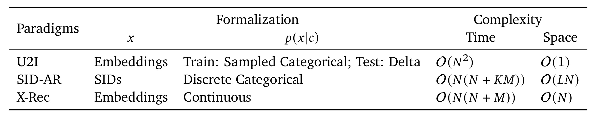
Table 1 的前三列要连起来读：物品表示是连续向量还是离散语义编号，条件分布又以什么形式建模。用户到物品方法在训练中采用采样分类式对比目标，测试时把概率质量集中到一个或几个触发点；语义编号自回归方法对编号序列建立离散分布；X-Rec 则将随机噪声经过连续流输运，得到条件分布中的样本。这个区别使同一用户能够在不同噪声种子下得到不同方向的检索点，但能否覆盖正确兴趣仍依赖学习质量，随机性本身不是准确性的保证。表中时间一栏保留了历史长度的二次注意力代价，所以 X-Rec 并没有消除长历史编码的成本，只是减少生成阶段反复调用深层网络的开销。
空间一栏尤其容易被误读。用户到物品方法标成常数级，指不需要为后续解码保留历史键值缓存，并不表示模型权重、历史输入或整个最近邻索引只占常数内存。自回归方法通常需要各层缓存，末层交互只需复用最终交互层的条件缓存。表中用历史长度和层数表达这种相对差异，省略了维度等共同因子，不能直接换算成显存节省百分比。还有一个原文符号不一致：表中 X-Rec 时间项写成历史长度乘以“历史长度加语义编号长度”，而正文式（12）化简后对应的是历史长度加触发数。笔记保留原图，不擅改表格；后续计算分析以式（11）的展开项和实际测量为依据，避免把排版中的符号冲突传播成新的理论结论。
语义编号路线则将每个视频向量量化成一串离散码。在本文实现里，四个大小为 4096 的码本经残差量化形成四个 token，平均重建余弦相似度约为 0.94。这样的表示便于使用自回归条件概率与束搜索，也能表达多峰选择，但平均相似度高不代表最近邻身份稳定。尤其当每个生成向量只取一个最近邻时，小角度扰动也可能跨过相邻物品的判别边界。此外，不同视频可能共用语义编号，追加非语义哈希码虽然有助于区分身份，却不一定保持内容结构。X-Rec 针对这些问题选择直接生成连续向量，不过它仍使用离散锚点作为粗区域条件，因此应称为“离散粗定位加连续细化”，不能概括成完全排斥离散表示。
1.2 多峰表达的收益必须和检索预算一起看
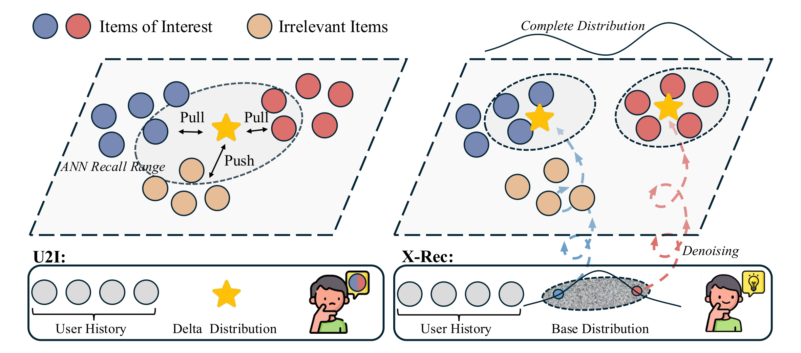
Figure 1 是机制示意而不是实验统计。左侧蓝色与红色圆点代表不同兴趣簇，黄色星形是用户触发向量，浅色圆点表示不相关物品。训练中的拉近与推远信号作用于同一个点，星形因而可能落在两个兴趣中心之间。虚线包围的是示意性的近邻覆盖范围，如果为了覆盖两端而扩大邻域，也可能把中间的不相关物品一起纳入。图没有给出实际嵌入维度、簇大小、距离阈值或召回率，因此不能从图上量出双塔的错误比例。其用途是解释为什么更大的单向量编码器不一定能消除输出形态造成的折中，而不是证明某个具体工业双塔必然失败。
右侧从基础噪声分布出发，沿不同轨迹生成多个检索点，最终落到不同兴趣区域。顶部的双峰曲线表达“模型拟合一个分布”的愿望，箭头则表示连续输运，而不是已经检索出的物品列表。工程上，每个触发点都可以向同一个向量索引请求邻居，因而能够在已有召回接口之上增加生成分支。重要的限制是，多点覆盖会占用候选预算，且不同点可能返回重复视频；多个点相距远，也可能只是错误地散布在无关区域。因此后文必须同时观察命中率和触发向量间相似度，不能只把分散当成有用的多样性。作者的多兴趣对照恰好说明，平均余弦更低的触发集合也可能命中更差，这为读图提供了必要的反面约束。
还有一个理论层面的界限：论文用多个半空间的并集解释多触发点带来的决策边界容量增加，但相同数量的确定性多兴趣向量也可以形成多个半空间。这种论证支持“更多有效触发区域比单点更有表达空间”，并不单独证明流匹配一定优于所有多兴趣训练目标。要判断连续生成是否值得接入，仍需控制骨干、物品表示、上下文与候选预算，再观察真实流式数据上的效果。本文提供同骨干的自回归和对比学习变体，因而比只与小模型比较更有说服力；同时，公开基线沿用各自配置，不能把它们之间的全部差值解释成生成范式的纯粹贡献。
2. 方法
2.1 锚点条件：先选择粗语义区域
X-Rec 的第一步是预测目标向量所属聚类中心的离散索引，即锚点。历史视频向量先通过线性映射进入模型维度；行为等子属性的嵌入拼接后投影，再与视频表示相加成为交互 token。因果序列编码器产生最后一个历史位置的上下文化表示，将其与期望目标属性表示相加，送入锚点 softmax 分类器。训练时已知真实目标视频，便可获得其所属锚点并计算原文式（19）。锚点用于限制生成问题的粗语义范围，最终输出仍是连续向量，不能把锚点编号直接当作视频身份。 这种分解使模型先学习较容易的区域选择，再学习区域内的细粒度位置，也为推理时调节覆盖范围提供了一个明确接口。
符号解释：$\hat c$ 是采样到的用户上下文，$\hat x^{(a)}$ 是真实目标向量对应的锚点索引，$p_{\mathrm{data}}$ 表示经验数据分布，$p_\theta$ 是参数为 $\theta$ 的锚点分类器，$\mathbb E$ 对训练样本求期望。这一交叉熵项要求正确区域获得更高概率，而不是要求输出一个精确的视频编号。推理时从预测分布中采样锚点，并用温度控制分布的集中程度；温度增大可以扩大粗区域覆盖，但过于平坦也可能把请求分配到用户无兴趣区域。本文默认温度是 1.4，其效果由后面的温度扫描验证，不是从损失函数自动推出的最优值。
2.2 球面 RFM：路径、速度与积分保持几何一致
物品表示是经过对比学习和二范数归一化的 128 维多模态向量，因此位于单位超球面。一般欧氏流匹配可以把噪声与目标作线性插值，但两点间直线大部分位于球内部；训练中的状态与最终检索目录的几何不一致。X-Rec 选择球面均匀噪声，以测地线构造条件路径，再学习路径上的速度。训练不需要先用模型逐步生成一整条轨迹，而是直接采样噪声和时间，计算对应状态与监督速度。这里“无需模拟”的含义限于训练目标构造，推理仍需数值积分。原文式（20）给出球面插值，式（21）给出其对时间的导数，两者共同确定速度回归的监督信号。
符号解释：$\epsilon$ 是单位球面上的基础噪声，$\hat x^{(e)}$ 是归一化的真实目标向量，$t\in[0,1]$ 是流时间，$\omega$ 是两个单位向量间的夹角，$\bar x_t^{(e)}$ 是训练时构造的中间状态。正弦权重使状态沿球面弧线从噪声走到目标，而不是沿空间直线穿过球内部。端点附近权重恢复各自的初始值和目标值，说明模型并未改变监督终点，只改变到达终点的路径。数值实现需要关注两向量近重合或近反向时分母趋小的情况；论文没有完整公开这些退化角度的实现处理，不能把额外稳定化技巧冒充原文配置。
符号解释：$d\bar x_t^{(e)}/dt$ 是上述条件路径在时刻 $t$ 的真实速度，其余符号沿用式（20）；两项余弦分别来自两个正弦权重的求导。速度不等于目标减去当前点的普通欧氏差值，而是与当前球面状态的切方向一致。训练网络要预测的是“此刻向哪个切方向移动以及移动多快”，不是一步直接猜出完整目标向量。由于同一中间位置可能对应多个不同目标，最优回归场综合这些条件路径，形成能够输运噪声分布的边缘速度场；这一分布学习解释依赖流匹配理论及充分训练，有限模型与有限步长并不保证精确恢复数据分布。
符号解释：$v_\theta^t$ 是同时接收当前状态、时间、上下文和锚点的神经速度预测器，$r$ 是球面基础噪声分布，$U(0,1)$ 是时间的均匀采样分布，范数平方衡量预测速度与真实条件速度的偏差。此处将原文式（22）中完整展开的插值和导数替换为前两式已定义的记号，目标没有改变。对噪声和时间取期望，使模型看到从早期粗移动到末期细化的不同状态；对同一目标采多个副本可以降低目标估计的随机性，但不会增加不同真实目标的数量。损失小意味着速度拟合更接近监督，并不能直接解释为某个召回百分点。
符号解释：$\mathcal L$ 是原文式（23）的总训练目标，$\alpha$ 与 $\beta$ 是锚点分类和球面速度回归的损失权重，本文实现分别设为 0.1 和 1。两个目标共享上下文编码，但分别约束粗区域选择与连续细化，数值权重不等价于两项功能的重要性排序；不同损失的数值尺度本来就不同。训练样本里的真实锚点给连续分支提供条件，推理则依赖预测锚点，故粗分类错误仍会传递到后续细化。论文用删除锚点的实验展示整体收益，却未给出在真实锚点和预测锚点之间切换的上限分析，因此不能将粗定位误差的剩余空间定量化。
符号解释：$\tilde x_t^{(e)}$ 是推理时由模型演化得到的状态，$\tilde x^{(a)}$ 是采样锚点，$\Delta t$ 为时间步长，$v_t$ 是为排版简写的模型切向速度，$\|v_t\|$ 决定此步的旋转角。该式对应原文式（24），沿切向方向在球面推进；只要当前状态为单位向量且速度与之正交，余弦与正弦的组合便保持单位范数。零速度处应按极限理解为不移动，这是公式的数学解释，不是声称作者公开了具体分支代码。默认推理用三十步，并采用尺度为 3.0 的无分类器引导；训练时以百分之五概率丢弃上下文以支持相应边缘速度估计。原文没有给出独立的引导公式，本笔记不补造一条当作论文公式。
2.3 末层交互与切空间投影
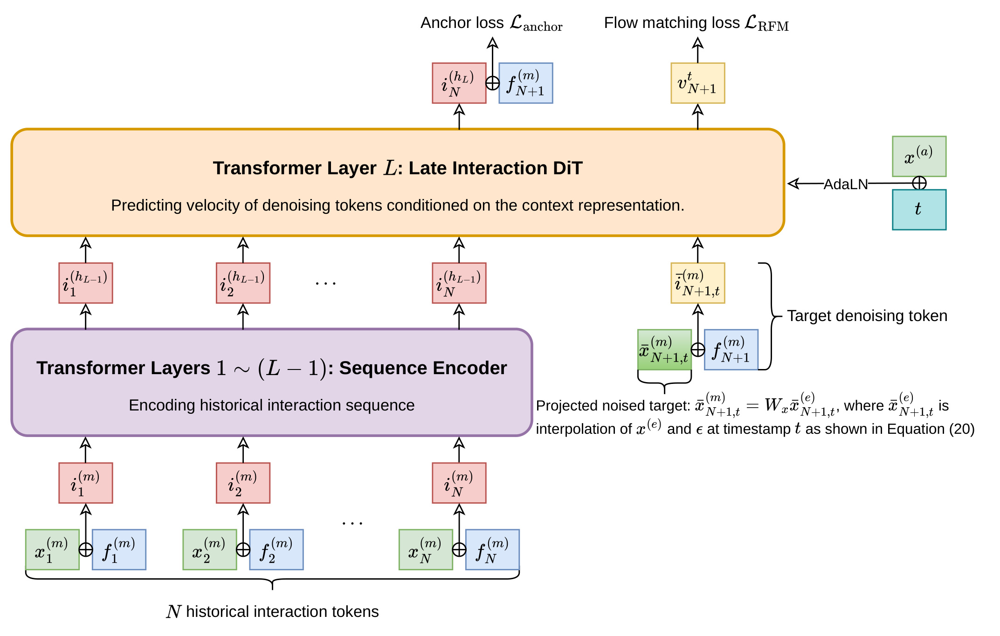
Figure 2 的下半部先将历史视频与属性相加，送入前面的序列编码层；上半部最后一层承担历史条件与目标去噪 token 的交互。黄色去噪 token 包含当前带噪物品状态的投影与期望属性，因此每个时间步改变的是这个目标状态，已经计算好的历史条件可以复用。右侧绿色锚点与时间嵌入相加，通过自适应层归一化调制注意力和前馈模块。顶部两条输出分别服务锚点损失与流匹配损失，说明粗区域分类与连续速度学习是联合训练的两条信号。与把完整历史和目标一起重新送过全部网络的方案相比，这种路径减少了反复计算；但历史仍经过深层骨干编码，不能把“一层去噪”误写成“整个模型只有一层”。
图中的先后关系也解释了缓存为什么可行。历史使用因果注意力，不依赖后来插入的目标去噪状态；因此改变目标噪声或时间，不要求重新改变历史键值。多个生成触发点可以共享同一份条件缓存，重复速度估计只调用最后交互层，节省的是生成阶段的深层调用和相应缓存维护。这个设计是计算分工上的取舍：历史理解由深层表示承担，复杂的条件速度映射压到较浅的末层；如果任务需要更多状态依赖的非线性变换，浅层可能限制质量，后面十四层版本的更高召回率正说明这种代价存在。图内没有展示真实运行时间、批大小或显存，实际吞吐必须以实验设置为准，不能仅凭网络框数推断端到端加速。
符号解释：$\tilde i_t^{(h_L)}$ 是目标去噪 token 在最终 Transformer 层的隐状态，$W_v$ 把它映射回物品嵌入维度，$v_\theta^{\prime t}$ 是未经约束的速度，$\tilde x_t^{(e)}$ 是当前单位球面状态。式子摘录原文式（31）的投影部分，省略的条件参数与上文相同。减掉速度沿当前状态方向的分量后，剩余向量与当前位置正交，位于球面切空间；它与前面的球面积分共同保证几何一致。这里投影的是速度而非简单把最终生成结果归一化，训练路径、模型输出方向与每一步积分都配套约束，才构成完整的球面方案。若只保留末端归一化，不能声称已经复现本文的 RFM。
2.4 预训练与 SFT 的不同可见性
符号解释：$N$ 是交互序列长度，$x_n$ 是第 $n$ 个目标物品，$i_{1:n-1}$ 是此前交互元组构成的前缀，$f_n$ 是该目标的属性，乘积表示原文式（32）的序列分解。每个条件因子都可使用锚点与流匹配联合损失优化，从一条序列构造多个前缀目标对，而不是只监督最后一次交互。这里的时间顺序自回归分解与“用多个离散 token 生成一个视频”的自回归解码是不同层次：X-Rec 仍尊重行为时间因果顺序，却不需要把一个视频拆成四个连续预测的语义码。论文将历史切成最多二百次交互的片段，随后通过专用掩码把多个目标的训练计算合到一次条件预填充中。
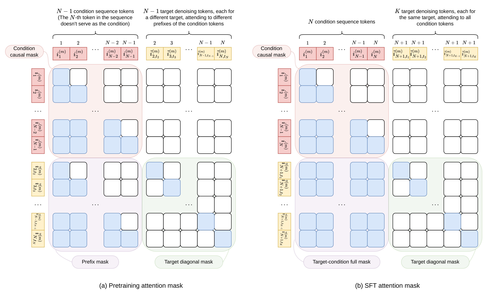
Figure 3 左半边对应序列预训练。历史条件块是因果下三角，每个目标去噪 token 只看到自己对应的历史前缀，因此目标位置越靠后，可访问的历史越长；去噪 token 彼此之间只保留对角可见，不能通过另一个带噪目标间接看到未来。图中位置索引也随前缀长度变化，目标的位置等于对应前缀之后的下一个位置。这样既利用了一条历史中的多个监督点，又没有把多个目标混成同一个请求的共同答案。对推荐任务而言，这是把语言模型式密集序列监督迁移到连续目标上的关键实现条件；若只把所有目标并排放进普通全可见注意力，就会改变任务的信息边界。
右半边对应监督微调：每个真实目标的条件由长期正反馈和近期交互按时间组成，所有带噪副本都对应同一个目标物品，并可见完整条件历史。论文每个目标采八组独立噪声和时间，所有副本位置相同，彼此仍不交换信息。其作用是对同一条件目标的速度损失做多次随机估计，不是在一次请求中观察八个未来视频。左右两种掩码共享架构，却构造不同的条件目标关系：预训练学习广泛的转移结构，微调对齐实际服务事件。图上历史因果块保持不变，也保留了末层条件缓存可以复用的前提；如果复现时改变历史顺序、正反馈定义或目标间可见性，即使模型层数和学习率完全一致，也已经偏离报告中的训练语义。本文未公开完整数据构造代码，这部分应视为复现的不确定来源。
3. 实验结果
3.1 流式协议与候选预算
离线数据来自 TikTok 工业交互日志，先预训练，再沿时间顺序经历 47 个连续分片。每个分片包含 260 万条采样训练例和一万条测试例，前一分片的最终模型用于初始化下一分片训练。按报告给出的数量相乘，流式训练样本条目合计约 1.222 亿，测试条目约 47 万；这些是分片条目总量，不代表去重后的用户数或视频数。每片的目标物品构成该片的近邻召回源，因而这里评测的是作者构造的分片索引，不是已证明覆盖整个生产内容库的全目录检索。时间顺序更新比静态切分更接近线上学习，但报告没有给出各片对应的实际时间跨度，也没有提供可外部重跑的数据。
原文式（33）明确命中如何计算，这个定义应先于任何模型均值：
符号解释：$\mathcal D$ 是测试样本集，$c$ 是用户上下文，$x$ 是真实目标物品，$t_k$ 为第 $k$ 个生成触发向量，$K$ 是触发数，$R$ 是每个触发取回的近邻数，$\operatorname{ANN}_{R}$ 返回邻居集合，$\mathbb I$ 是命中指示函数。候选并集中的重复物品只算一个，所以标称二十个位置不保证得到二十个不同视频。默认 X-Rec 和语义编号方法使用二十个触发各取一个邻居，单向量方法使用一个触发取二十个邻居；两者的候选上限相同，计算路径和覆盖形态不同。只有在明确这个区别之后，才能判断多触发是否真正改善同预算召回。
实现采用 Qwen3-0.6B 风格骨干，去掉 token 嵌入层后约 4.6 亿参数；这不是完整语言词表模型直接输出视频文字。预训练一个 epoch，共二十万步，批大小 4096，AdamW 学习率先用两千步升到五乘十的负四次方，再余弦衰减到一乘十的负四次方。流式微调使用三轮训练、批大小 512 和固定的一乘十的负四次方学习率。历史最大长度都是二百。公开基线沿用各自原配置，而 X-Rec-U2I 与 X-Rec-AR 控制了上下文骨干及表示空间；语义编号方法也先经码本重建向量，再走统一近邻协议。这样减少了检索后端不同造成的混淆，但不意味着所有模型参数量、搜索实现与训练算力完全相等。
3.2 主结果、附录复算与两个不同预算
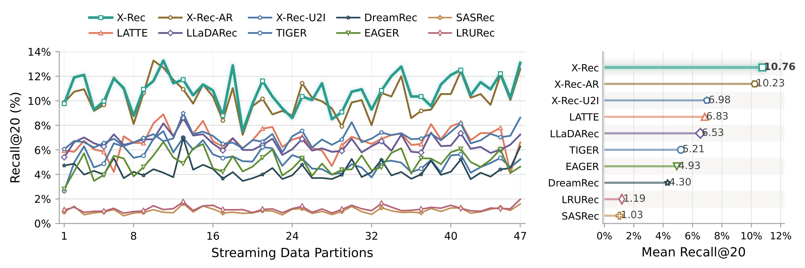
Figure 4 左侧横轴是顺序更新的四十七个分片，纵轴是百分比召回率；右侧给出各方法的跨分片平均。图中 X-Rec 为 10.76%，同骨干自回归变体为 10.23%，单向量变体为 6.98%；其余公开基线中 LATTE 为 6.83%，LLaDARec 为 6.53%，TIGER 为 5.21%，EAGER 为 4.93%，DreamRec 为 4.30%，LRURec 与 SASRec 分别为 1.19% 和 1.03%。最有解释力的比较是同骨干两个变体：连续生成在默认二十候选预算下略高于自回归，同时明显高于单触发；它没有证明所有生成模型都优于所有对比学习模型，因为不同公开基线没有严格保持模型容量一致。
这里必须披露正文冲突。第 4.2 节写 X-Rec 平均值为 10.65%，但 Figure 4、Figure 5 和 Figure 6 都标 10.76%。附录 Table 4 的四十七行数据独立求均值为 10.763617%，自回归为 10.233134%，单向量为 6.984083%，支持图中的四舍五入值。因此本笔记统一使用 10.76%，相对自回归提升 0.53 个百分点，相对单向量提升 3.78 个百分点；正文写的 3.67 与所选基准不一致，不混用。原文还称三十八个分片胜出、一个持平；按表中两位精度比较可复现该口径，若机械比较四位打印数会因极小舍入差把一个平局变成胜出，不能据此夸大稳定性。
曲线随分片共同起伏说明任务难度或候选分布随时间变化，平均优势不是每片绝对领先。尤其重要的是，附录 Table 5 在五十候选预算下给出另一种结果：逐行复算 X-Rec 为 12.702791%，X-Rec-AR 为 13.293713%，差约负 0.59 个百分点；X-Rec-U2I 为 9.675866%。这里生成方法是五十个触发各取一个，单向量方法是一个触发取五十个，不能与二十预算直接比较绝对高低后宣称方法变强或变弱。它说明“与自回归质量相当且默认预算稍优”比“所有预算全面超越”更忠实。报告未给离线随机种子方差和置信区间，零点几百分点的优势仍缺乏外部统计复验，不能把图中均值差自动称为显著性结论。
3.3 锚点、球面几何与预训练各贡献什么
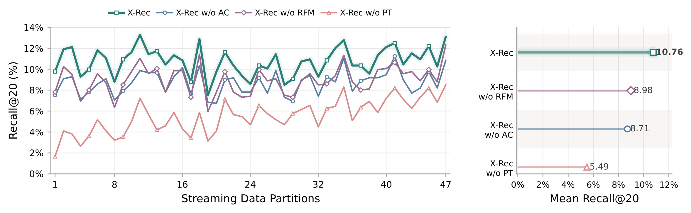
Figure 5 在同一流式横轴上比较完整方法与三种删除变体，右侧均值帮助分开理解不同设计。完整方法的平均 Recall@20 为 10.76%；删除锚点后是 8.71%，下降 2.05 个百分点；把球面流替换为欧氏 rectified flow 后是 8.98%，下降 1.78 个百分点；不做预训练而从流式阶段开始训练则只有 5.49%，下降 5.27 个百分点。纵轴的单位是召回百分比，所以这些差值是百分点而非相对百分比。三个对照各自回答“在其余配置保留时拿掉某一项会怎样”，不能把三个下降量相加当成完整模型的可分解收益，也不能据大小认定所有模块之间没有交互。
锚点的收益支持先粗定位再细化确实简化了当前任务，尤其作者报告其在所有四十七个分片均优于无锚点版本。球面设计的收益则与当前物品表示已经做归一化这一前提相连：训练路径、切向速度和积分与检索空间一致，减少了学习无关径向变化的负担。不过消融把整个球面方案换成欧氏方案，无法单独分辨测地插值、速度投影或积分更新各贡献多少，也没有穷尽“欧氏训练加额外归一化”等替代设计。它是组合几何设计的实证支持，不是对所有欧氏生成方法的普遍否定。迁移到未归一化或范数包含信息的表示时，不能直接照搬同样结论。
预训练曲线还提示一个工程上更实际的前提：低成本微调能否工作，依赖此前已经支付的大规模序列学习成本。无预训练模型虽然沿流式更新有所改善，始终没有追上完整模型，说明下游新鲜反馈不足以在这段训练预算内补齐初始表示和转移知识。论文未给出预训练总算力与数据去重统计，因此最终服务吞吐优秀并不能自动推出整体训练投入更低。对具备成熟向量索引但缺少大规模预训练资源的团队，这个差异会直接影响可迁移性。较合理的复现顺序是先对齐预训练初始化和表示，再测试几何与锚点，而不是只复现末层速度网络就期待达到报告水平。
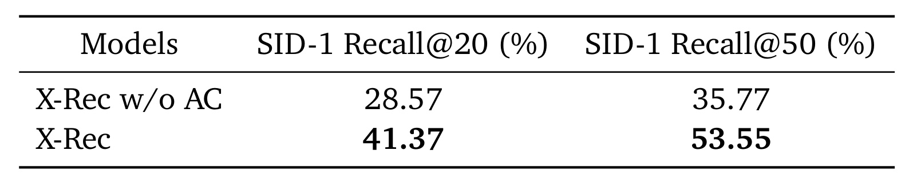
Table 2 将生成出来的触发向量重新量化为语义编号，然后检查真实目标的第一位编号是否被覆盖。两行是无锚点与完整 X-Rec，两列分别对应前二十和前五十触发的首位编号命中。无锚点时数值为 28.57% 和 35.77%，加入锚点后达到 41.37% 和 53.55%，对应提高 12.80 与 17.78 个百分点。它测量的是粗语义区域是否被触及，而非具体视频有没有进入候选；同一个首位编号可能包含许多物品，因此百分之四十以上的首码命中与百分之十左右的最终召回并不矛盾。把这两个指标混成同一粒度，会错误地放大模型准确性。
这项诊断把锚点机制和最终召回之间补上了一个可观察中间环节。仅看到删除锚点损失两个百分点，还不能确定收益来自更好分类、优化稳定性还是随机采样行为；首位语义码覆盖的改善至少与“粗区域更对”方向一致。但是这仍不是严格的因果中介分析：表里没有固定同一锚点而只改变连续细化，也没有报告每种区域的流行度、大小与覆盖难度。更高的首码覆盖可能同时受到触发分散度和粗分类概率影响。表中五十触发覆盖更多也包含样本预算更大的因素，不能把五十列相对二十列的增量解释成另外一个模型改进。
还有一个容易忽略的关系：X-Rec 并不依赖语义编号重建最终目标，却仍可以借助相同量化器诊断所到达的粗区域。这不会推翻“最终监督保持连续精度”的设计；诊断工具与生成目标是两个不同角色。作者通过离散区域控制生成，再用连续向量避免在最后一步丢失邻域细节，正是这套混合设计的特点。实际迁移时，如果聚类区域高度失衡或热内容占据大量概率，较高的首位覆盖不一定意味着长尾兴趣也受益。论文没有按冷热、类别或区域大小分层报告此表，故目前只能确认总体粗定位改善，不能确认各个内容群体都均匀改善。
3.4 末层数量决定怎样的速度质量取舍
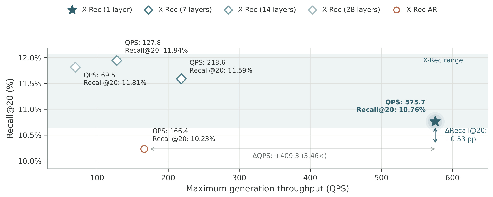
Figure 6 的横轴是最大观测生成吞吐，纵轴是平均 Recall@20。一个请求的条件长度为 199，并产生二十个触发；所有连续生成配置固定三十个去噪步，比较一层、七层、十四层和二十八层参与每次速度估计的差别。对应数值依次为 575.7 QPS 与 10.76%、218.6 QPS 与 11.59%、127.8 QPS 与 11.94%、69.5 QPS 与 11.81%。参照点 X-Rec-AR 是 166.4 QPS 与 10.23%。图上越靠右越能处理更多生成请求，越靠上召回越高，因此不同点体现真实的部署取舍；一层版本最高效，但最高召回属于十四层版本，不能称为一层在所有目标上都最优。
按图中数值，575.7 除以 166.4 约为 3.46，说明在这组测试中生成吞吐是自回归版本的 3.46 倍。其测量范围明确排除近似最近邻查找，不含排序、请求排队、网络传输与其他服务开销；论文只称单张生产级 GPU、使用 BF16，没有披露具体 GPU 型号，并且图中每个点取测试批大小中的最大吞吐。因此它不是同一个固定批大小上的延迟比，更不是线上端到端延迟下降比例。若真实系统瓶颈在索引查找或尾部延迟，生成阶段加速并不能原样转化成容量收益。报告也未提供各批大小曲线、峰值显存和请求延迟分位数，外部读者无法据此完成硬件容量预算。
这张图还包含必须更正口径的算术冲突：十四层的 11.94% 减一层的 10.76%，实际是 1.18 个百分点；正文声称 1.05，与该比较不符。1.05 恰好等于图中二十八层与一层的差值，但没有作者修订时不能擅自认定错误原因。本文只记录可核验的图中对比。对应吞吐，一层约为七层的 2.63 倍、十四层的 4.50 倍、二十八层的 8.28 倍；不能把十四层最好的召回、二十八层的最差速度和正文错误差值拼成一个不存在的实验对。层数继续增加并未单调提高准确率，也提示速度网络深度与优化、训练预算或模型容量之间仍有相互作用，不能把“越深越好”作为复现前提。
3.5 同样二十个候选，广度和深度怎么分配
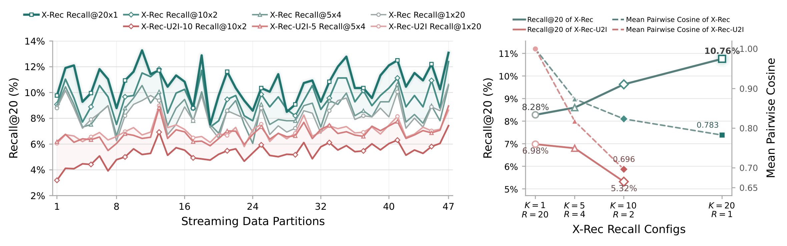
Figure 7 比较四种预算分配：一个触发取二十邻居、五个触发各取四个、十个触发各取两个，以及二十个触发各取一个。左边观察各流式分片，右边同时显示平均召回与触发间平均两两余弦。对 X-Rec，Recall@20 依次为 8.28%、8.60%、9.63%、10.76%，从深挖一个区域变成覆盖更多区域后提高 2.48 个百分点；作者报告二十触发在四十五个分片取得最好或并列最好结果，而且所有分片都优于单触发配置。在本数据与表示下，有限候选位置用于分散到多个兴趣区域更有效，不过这一结论只覆盖测试过的四种分配，不意味着近邻深度在所有业务中都无价值。
同骨干多兴趣 U2I 采用 ComiRec-SA 风格自注意力提取多个确定性向量。其单触发为 6.98%，十触发各取两个却降到 5.32%。更值得注意的是，十触发时 U2I 的平均两两余弦约 0.696，比 X-Rec 同配置的 0.823 更低，但准确率显著更差；右图 X-Rec 二十触发处的 0.783 不能拿来替代十触发对照。由此可以看出，触发点彼此不相像只代表几何分散，不代表它们分散到了用户感兴趣的区域。单触发情形把该余弦指标约定为一，也是人为定义而非实际计算了两个向量。理解这些细节，才能避免把右轴下降本身当成独立优化目标。
对此还需要阅读附录，而不是只接受主文的解释。主文把多兴趣退化部分归因于每个目标只监督一个获胜兴趣，触发数增加后监督变稀；附录 A.2 却说明作者观察到原始获胜触发目标不稳定，实际采用改进损失，让每个正负候选都匹配自己的最近触发，再进行对比学习，声称让更多触发获得优化信号。因此实验确实说明报告中的多兴趣变体不如连续生成，但不能毫无保留地用“仅更新一个获胜向量”解释最终实现。这里存在叙述与实现说明的张力，需要作者代码或进一步消融澄清。更稳妥的结论是：在给出的共同骨干、数据和预算设置下，增加确定性向量数并未复制连续分布采样的收益，而不是所有多兴趣方法理论上都必然退化。
3.6 锚点温度和连续目标精度的边界
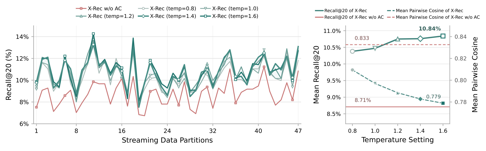
Figure 8 左侧仍按四十七个流式分片展开，右侧横轴改为锚点采样温度，左纵轴显示平均 Recall@20，右纵轴显示触发间平均余弦。无锚点基线是召回 8.71%、平均余弦 0.833；温度 0.8 的有锚点模型已经达到召回 10.38%、余弦 0.809，说明锚点不是只能把生成限制得更集中，它也帮助触发到达多个正确区域。温度从 0.8 增至 1.6，余弦继续降至 0.779，召回提高至 10.84%。这里调的是锚点分类分布的采样温度，不是对比学习中的相似度温度，也不是流时间、去噪步长或最终排序分数的温度，多个同名参数不能混为一谈。
曲线的后半段呈现收益趋缓：温度 1.2、1.4、1.6 的平均召回分别为 10.75%、10.76%、10.84%。默认 1.4 接近测试区间的饱和点，但不是实验最高值，更不是理论上必然最优的温度。实验没有扫描到极大温度，也未给各点误差条，不能依据最后两点就断言继续增温仍会改善。概念上，温度过低会倾向选择同一高概率锚点，过高则趋于均匀，可能牺牲用户条件对语义区域的约束。图支持在当前范围内增加粗区域探索具有正收益，同时保留在其他数据或更高温度下损伤准确率的可能。
这与 Figure 7 的反例共同构成一个更细致的工程认识：几何分散只有与用户条件一致时才有价值。锚点温度提供一个便于控制的探索接口，而不是需要重新训练多个兴趣槽才能改变触发数量；然而增加区域覆盖也可能增加近邻重复率、低质量尾部候选或后续排序负担，论文没有把这些指标放进同一温度扫描。实际接入时应观察候选去重后的有效数量及后续排序接受率，才能确认离线命中收益传到了服务链路。这是由图中指标范围引出的复现关注点，不是论文已经验证的线上优化结论。
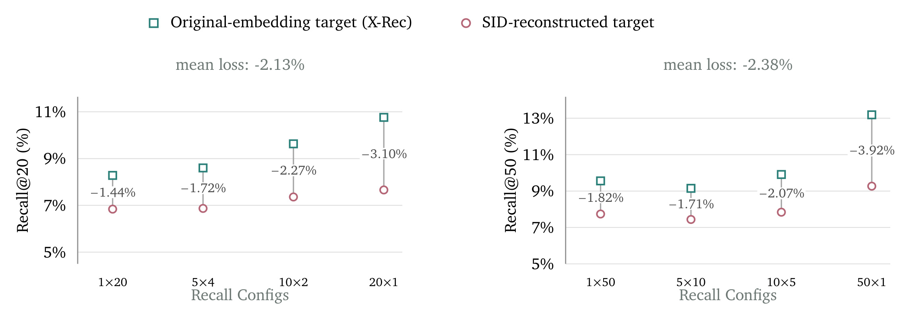
Figure 9 保持连续生成器框架，将微调监督从原始视频嵌入改成语义编号经残差码本重建的向量。左面板是二十候选预算，四种配置的绝对召回下降分别为 1.44、1.72、2.27、3.10 个百分点，平均约 2.13；右面板是五十候选预算，对应下降 1.82、1.71、2.07、3.92 个百分点，平均约 2.38。图中连接线上的负号表示重建目标相对原目标更差，不是训练损失变成负数，也不是相对下降百分比。每个点都是跨分片的均值，图没有给出各样本重建误差与命中变化之间的回归关系。
最明显的模式是每个触发只取一个近邻时下降最大，分别对应二十乘一和五十乘一。原因在于检索身份对局部几何细节很敏感：即使目标重建向量与原向量平均余弦达到 0.94，最近邻排序边界也可能被越过。多取几个邻居有机会缓解这种身份偏移，而只取最近一个时，微小位置偏差可能直接令真实物品不在候选并集中。这项对照比笼统声称“量化会丢信息”更贴近最终任务，因为它把表示变化接到了实际召回。但它测的是把量化目标注入同一个连续学习过程的影响，并没有隔离所有自回归解码和束搜索因素，不能用这几个差值预言任意 SID 系统相对 X-Rec 的最终差距。
这也解释了为什么连续目标优势与 Recall@50 下 AR 均值更高并不矛盾。一个实验控制的是生成器不变时目标表示损失，另一个比较的是完整生成方案在不同候选预算下的表现，后者还包含分布建模、采样及搜索的差异。避免量化损失是一个局部设计优势，不等于整体系统在每种预算都占优。论文当前码本规模与四级量化只代表一种工作点，没有扫描更大码本、更长编号或联合学习量化器；保留原始连续目标是否仍有相同幅度收益，需要另行验证。在目录变化很快的场景，嵌入模型和索引版本的一致性也可能成为新的误差来源，连续生成本身不会自动解决这些维护问题。
3.7 多兴趣个例能说明什么
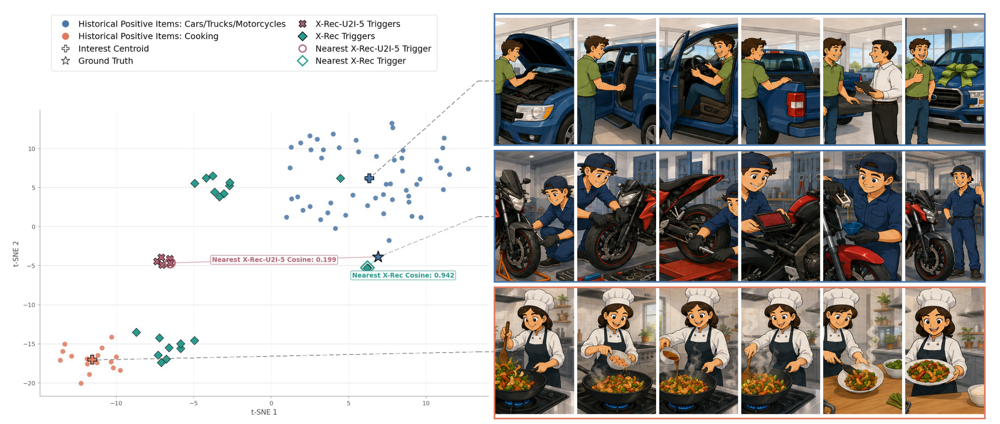
Figure 10(a) 把 128 维历史物品向量和触发向量用 t-SNE 投影到二维。蓝色历史点属于车辆相关内容，橙色点属于烹饪，绿色菱形是 X-Rec 触发，粉色叉号是五兴趣 U2I 触发，星形代表真实目标。这个例子里目标属于车辆类别，X-Rec 的最近触发与目标余弦为 0.942，U2I-5 的最近触发为 0.199；生成触发同时分布到两种兴趣附近，而确定性触发集中在两簇之间的局部区域。横纵轴只是降维坐标，没有百分比、距离时间或业务量纲。图中的相似度标注应与二维点间距离分开理解，不能从二维坐标重新计算原始向量余弦。
右侧视频示例是作者按相应类别用 AI 生成的说明素材，不是真实用户视频，也不是模型现场生成并推荐的内容。 论文第 23 页脚注明确给出这一说明；本笔记只是裁取原始 Figure 10(a)，没有重新制作示例图。示意画面帮助读者理解汽车与烹饪类别，不可用来推断真实用户身份、具体浏览内容或生成推荐系统已经具备视频制作能力。本文没有保留同页子图（b）的重复案例，但已审计其影视、喜剧和传统体育类别；同样没有把附录的额外案例拼接成新的证据图。
附录 Figure 11 与 Figure 12 补充了穿搭、音乐、家居等多组五兴趣对照，Figure 13 与 Figure 14 将确定性触发数提高到十，仍展示集中现象。这些个例加强了作者对典型失败形态的直观描述，但不是随机抽样的整体错误分布。t-SNE 会改变全局距离关系，展示哪些案例也可能受到选择偏差影响，所以图不能证明每个用户都拥有相同双峰结构，不能推出某一比例的用户已被修复。可靠的总体证据仍是固定预算下的命中结果及多兴趣消融。把定性图用于理解“平均点可能落在兴趣谷底”，把量化实验用于判断改善是否普遍，才不会让一个视觉鲜明的案例替代完整评测。
3.8 两次线上发布与作者加总口径
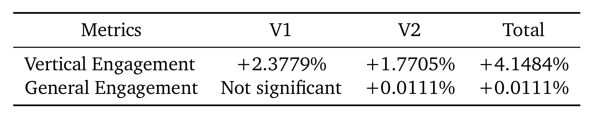
Table 3 对应 TikTok 某一垂直内容推荐中新增的召回源，而不是替换整个推荐系统。V1 已包含球面 RFM 与末层交互，没有锚点条件；V2 在 V1 基础上加入锚点。垂域参与度第一轮提升 2.3779%，第二轮提升 1.7705%；一般信息流参与度第一轮不显著，第二轮提升 0.0111%。表注称除“不显著”外其他结果均达到统计显著，但没有披露具体检验阈值、样本量、持续时间、置信区间和指标精确定义。因此可以忠实记录作者的显著性声明，不能由笔记自行检验或补充未公开的统计把握度，更不能把参与度擅自改名成时长、留存或收入。
Total 栏的垂域 4.1484% 恰好是两轮百分比的简单相加。作者认为 V2 以 V1 为基线，可以合并估计总提升；本笔记保留“作者加总口径”这一归属，不把它描述成独立运行的第三个 A/B，也不自行把两个数字复合相乘后换成另一个所谓总效果。两轮实验是否使用同一人群、同一分母、同一时间环境和相同流量条件，报告没有给出足够信息。一般信息流的 0.0111% 仅来自 V2；V1 不显著不能写成精确零，更不能说 V1 已证实对全站无影响。对这组小数位很多的数字，应区分报告精度与外部可验证程度。
线上与离线两类证据的连接仍然有限。线上第二版加锚点的方向与离线删除锚点损失相符，支持粗语义条件在该垂域有业务价值；但上线作为新增召回源，会与已有通路、候选配额、去重和排序共同作用，最终参与度不是单个召回率差值的直接换算。论文没有披露垂域名称、整体流量占比或各模块独立在线消融，因而无法判断相同部署是否适用于其他内容类别，更不能从一个新源的收益推断全量替换收益。较稳健的工程定位是“具有生产证据的可补充召回方案”，而不是已证明能统一取代所有现有检索通路的系统。
4. 总结
4.1 方法价值与适用前提
我的判断是，X-Rec 最有价值的贡献在于把三个彼此牵制的问题放到同一个召回接口下解决：锚点把难以直接学习的多峰空间分成粗区域，球面流让连续生成与归一化物品几何一致，末层交互则把反复速度估计与昂贵的历史理解分开。三者不是互不相关的技巧清单，而是共同决定生成是否可控、向量是否对齐、计算是否可服务。特别是离散锚点仍被保留，说明工业系统可能更适合在不同精度层级选择不同表示形式，而不是在离散和连续之间做绝对二选一。连续目标保住了局部近邻细节，离散区域又提供了控制覆盖的方便接口，这种分工比单纯强调使用扩散或流匹配更值得迁移。
同时，本文对表达能力的批评需要限定到具体输出与训练机制。一个向量难以覆盖多个区域是真实动机，但多兴趣系统有不同的目标分配、候选聚合与训练稳定化方案；报告中的 ComiRec 变体表现不好，尚不足以覆盖整个方法族。自回归对照在默认二十候选预算下略低，在附录五十预算下却更高，也说明最终效果取决于生成分布如何被有限采样和搜索转化成候选。对工程读者而言，优先判断现有链路的瓶颈究竟是兴趣覆盖、表示精度还是生成开销，再决定复制哪部分设计，比简单替换算法标签更有依据。
4.2 四类尚未被报告消除的风险
首先是复现和数据风险。工业数据、物品编码器训练细节、完整锚点构造代码与在线指标定义没有一并公开，外部只能核对报告内部证据，不能直接确认其对公开数据或其他垂域的迁移效果。第二是统计与文本一致性风险：平均召回、层数差值、复杂度符号以及多兴趣损失解释存在不同程度冲突；本文选择图表与附录复算的明确口径，并保留未解释部分，而不能借统一排版假装原文已经完全自洽。离线缺少误差条，也限制了对较小平均差异的确信程度。
第三是成本边界。单卡生成吞吐不含近邻查询，具体硬件型号与延迟分位数未给，三十步采样仍然有反复计算；预训练成本也不能由推理加速推断。若想用于容量决策，必须重新测量自身索引、候选融合及排队条件下的全链路开销。第四是业务归因与可解释性边界。两次线上实验的加总不是一次独立总实验，示例视频由作者生成，二维投影也不是人群统计；因此目前证据支持该垂域新增通路有效，不支持对用户满意度、长尾公平性或全站替代收益作更强断言。这些缺口影响的是结论能够外推到哪里，不会抹去报告已经展示的局部收益。
4.3 后续复现最值得验证的三个问题
第一个问题是单步或少步采样能否保持局部邻域精度。作者将蒸馏、适应性求解器与硬件优化列为未来方向；结合量化实验可知，最终一点角度误差就可能改变最近邻，所以评估少步版本不能只看速度损失或向量平均余弦，必须重跑不同触发数和近邻深度下的命中。这会决定三十步采样能否真正压缩成更便宜的在线实现。
第二个问题是末层交互如何随骨干与速度模块规模扩展。十四层已经带来更高召回但更低吞吐，报告尚未给出更大骨干下的尺度规律。应在固定资源预算和实际尾延迟约束下比较，而不是分别拿不同批大小的最好吞吐和不同模型的最好召回拼接方案。它关系到连续生成的优势究竟来自更优计算分配，还是当前规模下的特定工作点。
第三个问题是监督分布与长期目标能否更好对齐。作者提出奖励对齐后训练作为方向，但尚未展示强化学习结果；真实用户长期满意度、多样性与短期下一物品命中可能并不完全一致。在现有结果上，先核实线上两次发布的指标分母、随机化和全链路容量，再讨论额外奖励优化更稳妥。只有这些信息补齐，才能把这份有价值的生产技术报告进一步转化成可独立重复、可迁移且能量化资源收益的系统方案。